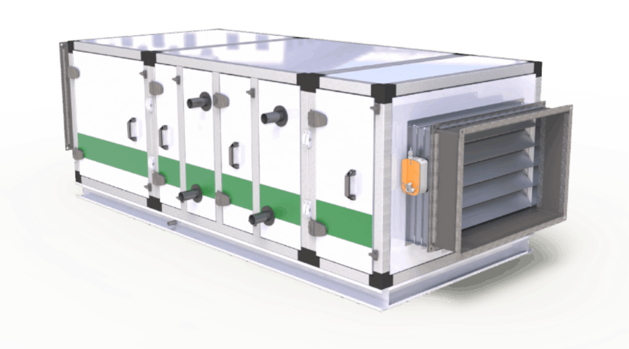
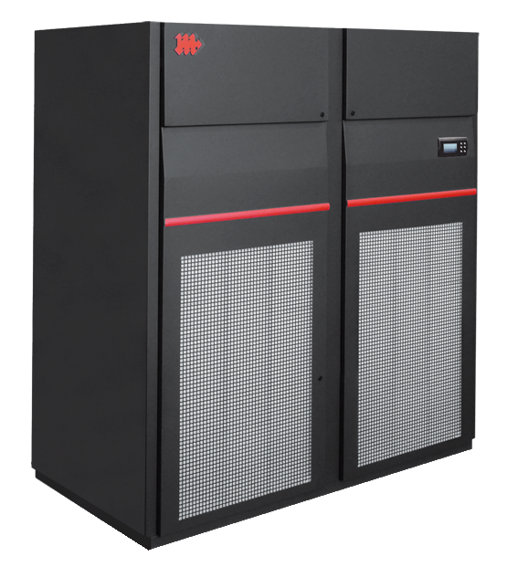
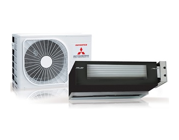
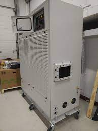
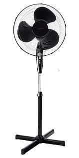

Кондиционеры
Переход на заглавный сайт
- Центральные кондиционеры
- Прецизионные кондиционеры
- Винные кондиционеры
- Автономные системы кондиционирования
- Вентиляторы
Подробный разказ
1.Центральные кондиционеры
Это промышленные агрегаты, которые применяются для обработки воздуха в крупных коммерческих и административных
зданиях, плавательных бассейнах, промышленных предприятиях и других. Центральный кондиционер является неавтономным, то
есть для работы ему необходим внешний источник холода: вода от чиллера, фреон от внешнего
компрессорно-конденсаторного блока или горячая вода от системы центрального отопления, бойлера.
Ютуб обзор

2.Прецизионные кондиционеры
Применяется в помещениях, требующих поддержания заданных параметров с высокой надёжностью и точностью, таких как
медицинские учреждения, производственные помещения, лаборатории, посты управления, узлы связи, залы электронных
вычислительных машин, диспетчерские пункты и другие помещения. Представляет собой моноблок, который содержит
вентиляционный агрегат, фильтр, холодильную машину с хладоновым воздухоохладителем, водяной воздухонагреватель и
электрический калорифер. Применяется кондиционер как в системах с рециркуляцией воздуха, так и в системах со 100 %
приточным воздухом.
Ютуб обзор

3.Винные кондиционеры
Используются в погребах и помещениях для хранения дорогих вин, где всегда должен поддерживаться строго определенный
микроклимат. Температура воздуха — 12 °C, влажность воздуха 60–70 %. Только в этом случае вина могут храниться в
течение долгого времени. Вино в правильно оборудованных погребах с каждым годом становится все более выдержанным
и дорогим.
Ютуб обзор

4.Автономные системы кондиционирования
Снабжаются извне только электрической энергией, например, шкафные кондиционеры и тому подобное. Такие кондиционеры
имеют встроенные компрессионные холодильные машины, работающие на фреоне — R-22, R-134a, R-407C[en], R-32. Автономные
системы охлаждают и осушают воздух, для чего вентилятор продувает рециркуляционный воздух через поверхностные
воздухоохладители, которыми являются испарители холодильных машин, а в переходное или зимнее время они могут
производить подогрев воздуха с помощью электрических подогревателей или методом реверсирования работы холодильной
машины, по циклу так называемого «теплового насоса».
Ютуб обзор

5.Вентилятор
Устройство для перемещения газа со степенью сжатия менее 1,15 (или разностью давлений на выходе и входе не более 15
кПа, при большей разнице давлений используют компрессор)[1].
Ютуб обзор
